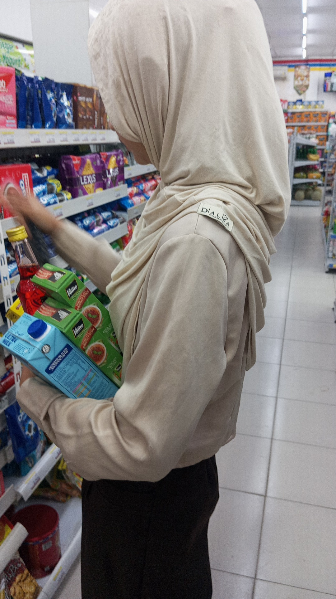
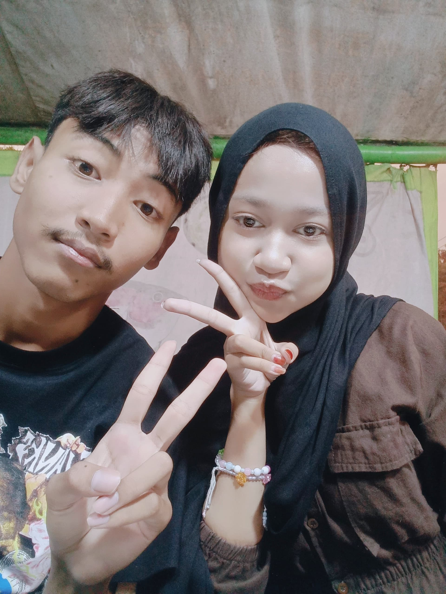

🎵
"I made this web just for u"
Klik Kadonya, Sayang! 🎁
Happy Birthday Mylovee!!
Lanjut ➔

You get more amazing every year baby!!
Lanjut ➔
I proud of you baby, i love you so much 🫶
Lanjut ➔

Okey okey last one fr i made something for your bday, read it slowly yaaa 🎂
Buka Pesan ➔
Untuk Sayangku Nanaa
Putar Lagi ✨